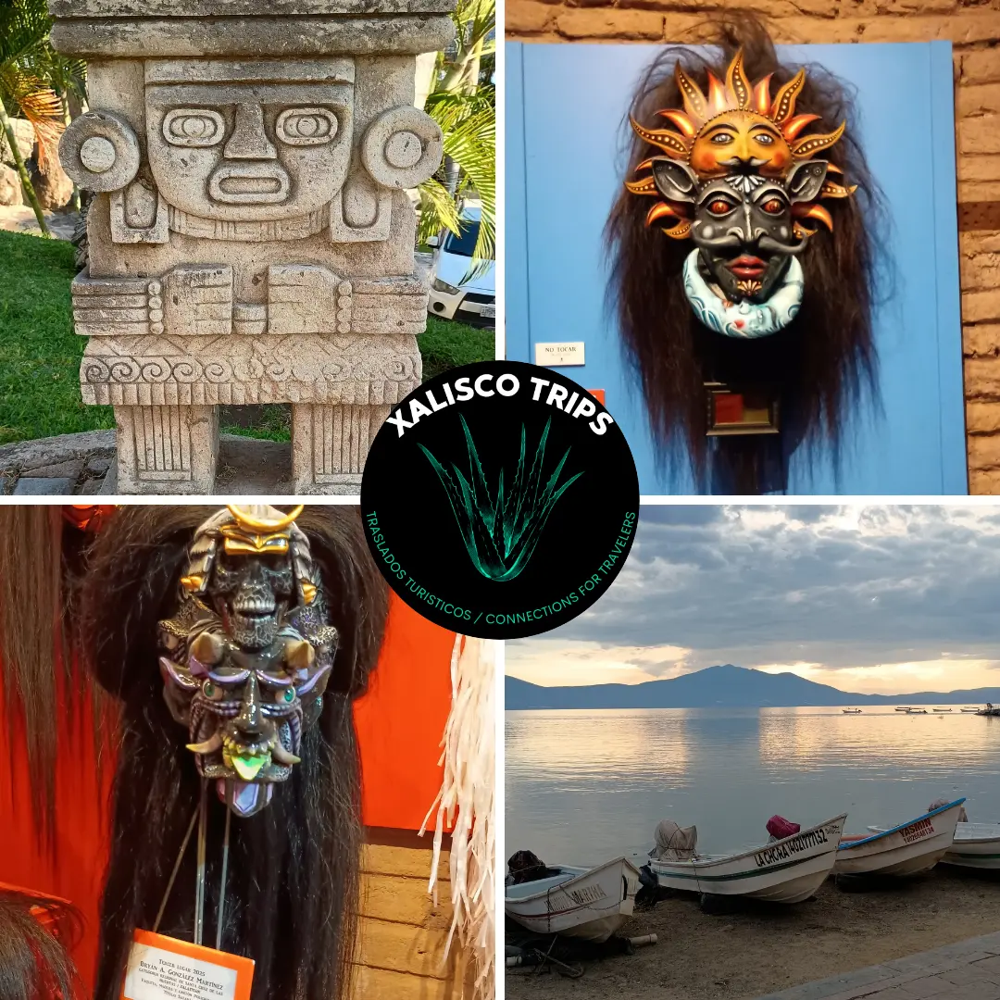
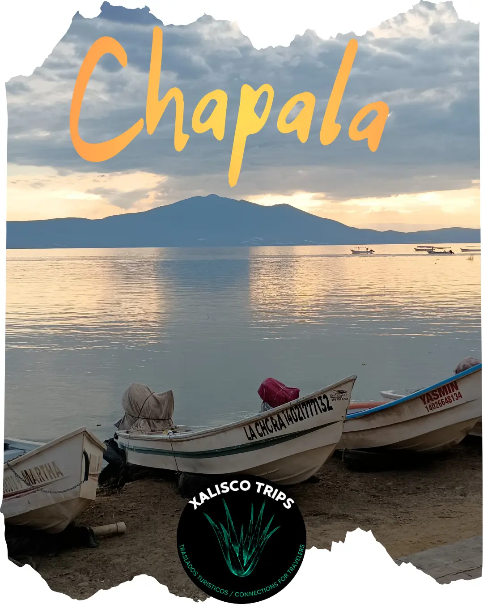
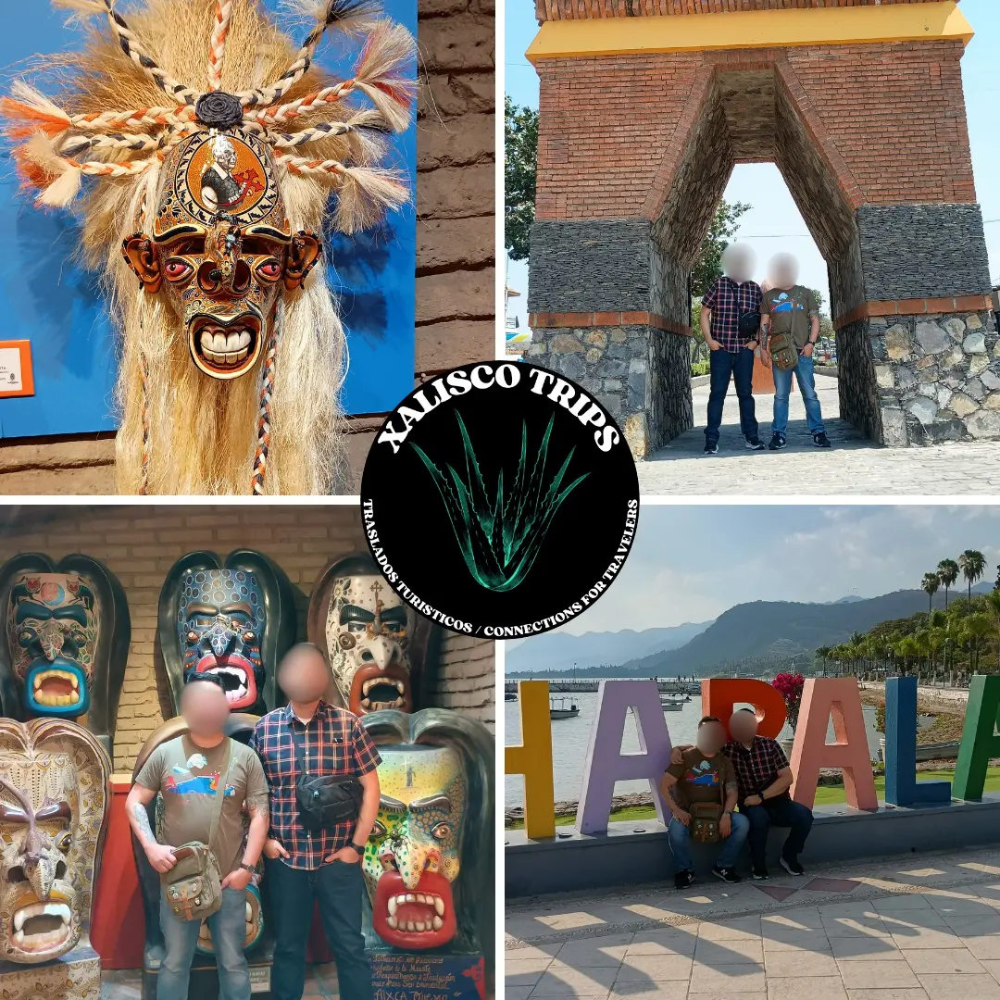
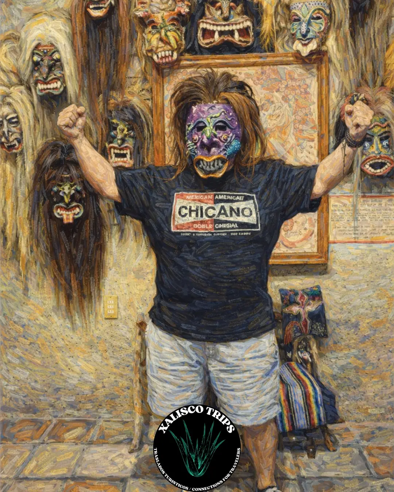
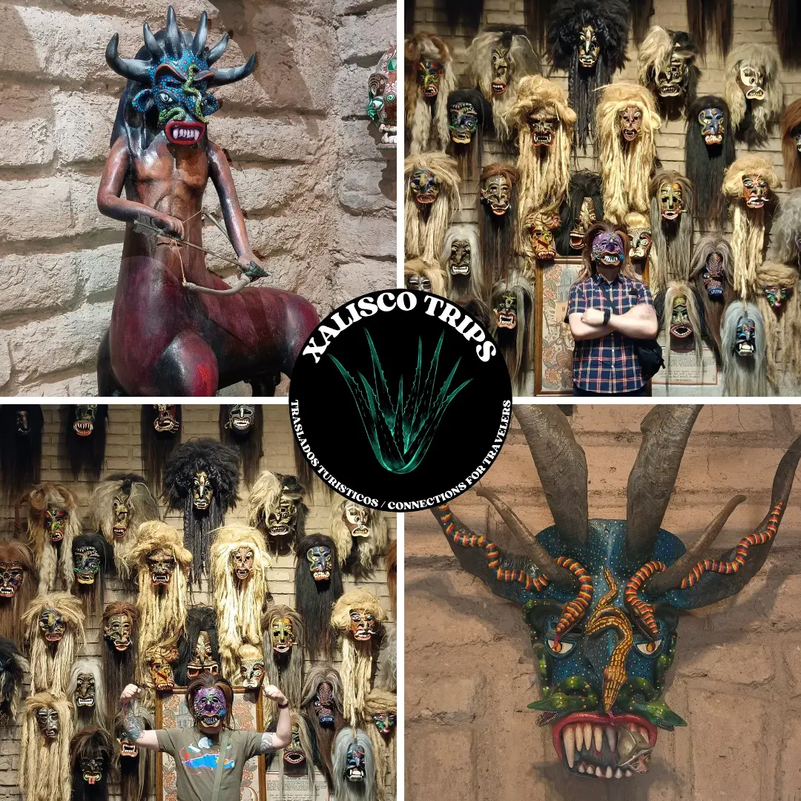
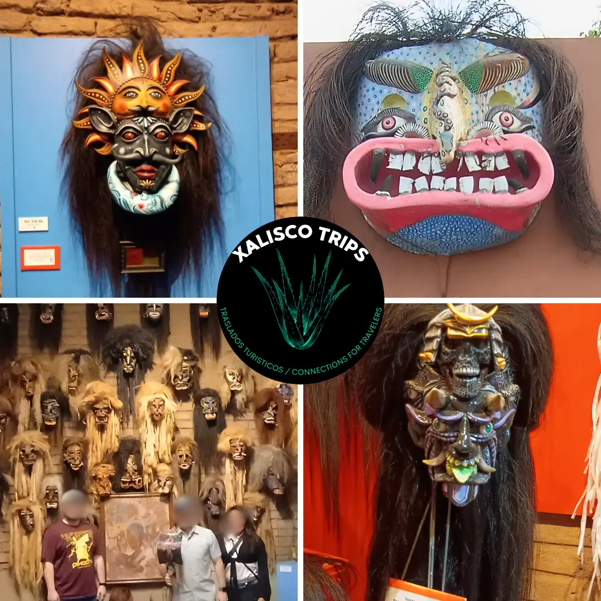

Tour Privado Jalisco — Lago Chapala, Ajijic y Mercado Artesanal de Tonalá
Solo tu grupo. Guía bilingüe certificado Sectur. Itinerario flexible.
Olvídate del camión turístico. Este es TU día, TU ritmo, TU Jalisco — en una minivan privada con clima con el guía certificado Octavio, exclusivamente para tu grupo. Sin desconocidos. Sin paradas fijas. Conocimiento local real.







Por qué los viajeros reservan este tour privado
- 100% privado — solo tu grupo en el vehículo
- Guía bilingüe certificado Sectur (inglés/español)
- Lago Chapala — el lago más grande de México + Pueblo Mágico de Ajijic
- Rancho Los 3 Potrillos — la legendaria hacienda de Vicente Fernández
- Mercado artesanal de Tonalá — artesanías prehispánicas, Museo MUTA
- El Parián de Tlaquepaque — maestros vidrieros, ceramistas y mariachi
- Recogida y regreso en hotel en toda la Zona Metropolitana de Guadalajara
- Itinerario flexible — tú decides el ritmo y el tiempo en cada parada
- Cancelación gratuita hasta 24 horas antes de la salida
Itinerario del Día
9 - 11 horas (flexible según tu preferencia)
08:30 AM — Recogida en tu Hotel
Pasamos a recogerte en tu hotel ubicado en Guadalajara o zona metropolitana.
09:15 AM — Llegada a Tonalá
Mercado artesanal, talleres de artesanos y Museo de Máscaras — las mejores horas para comprar antes de que el calor se intensifique. Tiempo flexible (típicamente 3 horas).
12:00 PM — Almuerzo en Tonalá
Recomendaciones del guía para los mejores restaurantes locales. El almuerzo corre por tu cuenta.
1:00 PM — Traslado a Chapala
Viaje de 45 minutos a Chapala.
2:00 PM - 5:00 PM — Riviera de Chapala
Paseo por el malecón, centro histórico, mercado local y vistas al lago. Tiempo flexible para explorar a tu ritmo, relajarte junto al agua o probar comida local fresca.
5:00 PM — Regreso a Guadalajara
Partimos de regreso a la ciudad.
6:00 PM — Descenso en tu Hotel
Te dejamos en tu hotel o dirección acordada.
Preguntas Frecuentes — Chapala + Tonalá
-
Opción 1 — Pago completo vía Clip (MXN):
Paga el 100% vía link seguro de Clip antes de tu tour.
Vence: 24 horas antes de la fecha del tour.
Ejemplo (4 personas a $900 MXN/persona): $3,600 MXN total vía Clip. -
Opción 2 — Depósito Higlobe + Saldo en efectivo
(USD):
30% de depósito vía transferencia Higlobe a Cross River Bank, 885 Teaneck Road, Teaneck NJ 07666 (USD).
Saldo 70% en efectivo USD el día del tour.
Vence: Depósito Higlobe 72 horas antes / Efectivo al inicio del tour.
Ejemplo (4 personas): $60 USD depósito Higlobe + $140 USD efectivo el día. -
Opción 3 — Pago completo en efectivo (USD):
100% en efectivo USD, pagado al inicio del tour.
Vence: Día del tour.
Nota: La reserva se mantiene pendiente de confirmación de depósito. Reservas solo en efectivo sujetas a disponibilidad.
- Mercado artesanal con cerámica, vidrio soplado y textiles
- Talleres de artesanos en vivo
- Museo de Máscaras (exposición única de máscaras mexicanas tradicionales)
- Tiendas y galerías locales
- Restaurantes y cafés auténticos
- Paseo por el malecón frente al agua
- Centro histórico con arquitectura colonial
- Mercado local (comida fresca, artesanías)
- Vistas panorámicas del lago
- Restaurantes de comida local (pescado fresco especialmente)
- Tiempo en Tonalá (puedes pasar 4 horas si lo prefieres)
- Tiempo en Chapala (relajarte más junto al agua)
- Si quieres saltar alguna actividad
- ✅ Transporte privado puerta a puerta
- ✅ Guía certificado durante todo el recorrido
- MUTA Museo Tastoanes — entrada gratuita
- ❌ Almuerzo (~$250-400 MXN)
- ❌ Compras en mercados y tiendas
- ❌ Propinas
Métodos de Pago
Aceptamos opciones de pago flexible para tu conveniencia. Se requiere un depósito del 30% no reembolsable para asegurar tu reserva.
Link de Pago Clip
Paga en Pesos Mexicanos (MXN) al instante vía Clip.
✓ Confirmación instantánea
✓ Pago seguro
Efectivo USD
Paga el monto completo o depósito en efectivo USD el día del tour.
Cuándo: Recogida del hotel o inicio del
tour
Qué aceptamos: Billetes USD en efectivo
Nota: Se requiere depósito del 30% con
anticipación
Transferencia Banco Azteca (MXN)
Envía fondos directamente desde tu cuenta bancaria MX.
Banco:
Banco Azteca
CLABE:
127180016171261785
Titular:
Octavio Jacob Orozco
González
Sin comisión para el cliente
Incluye la fecha de tu tour en el memo. Permite 2-3 días hábiles para procesar.
⚠️ Política Importante de Pago y Cancelación:
- Opción 1 — Clip (MXN): Paga el 100% vía link seguro de Clip. Vence 24 horas antes de la fecha del tour.
- Opción 2 — Banco Azteca + Efectivo (USD): Depósito del 30% vía transferencia CLABE 127180016171261785 (Banco Azteca), titular Octavio Jacob Orozco González, vence 72 horas antes del tour. Saldo del 70% en efectivo USD al inicio del tour.
- Opción 3 — Efectivo Completo (USD): 100% en efectivo USD, pagado al inicio del tour. Sujeto a disponibilidad — ningún depósito retiene la fecha.
- Política de No-Show: Cancelación dentro de 24 horas del inicio = pérdida del depósito completo. Cancelaciones con 48+ horas de anticipación reciben crédito para tours futuros.
- Importante: Ninguna reserva se confirma solo por acuerdo verbal. Tu lugar se asegura solo después de la confirmación del depósito.
¿Listo para tu Aventura?
Tour privado personalizado. Tú decides el ritmo.
Reservar Ahora por WhatsAppRespuesta garantizada en menos de 15 minutos